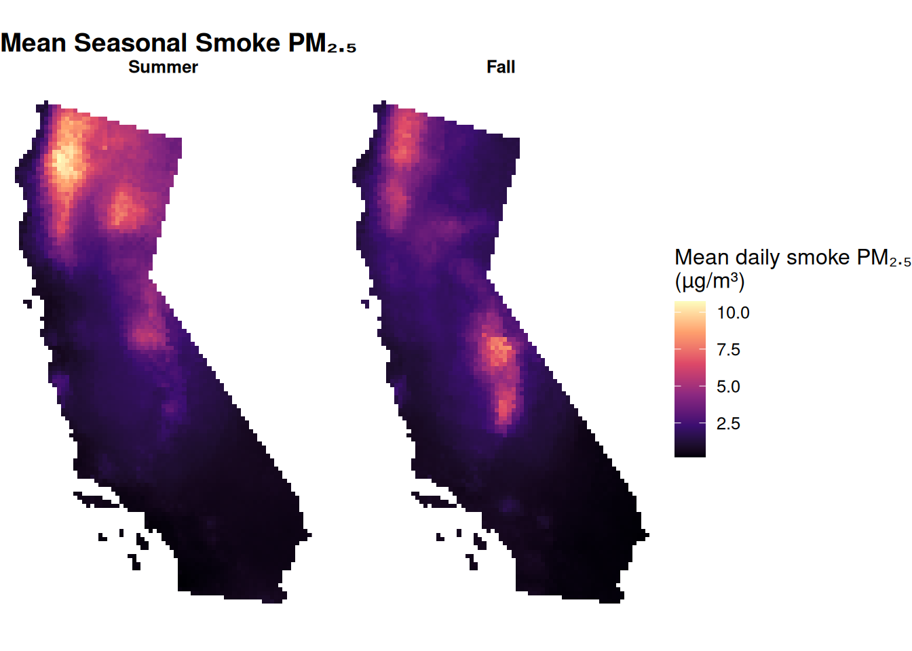

Show Code
library(rmarkdown)Seasonal Trend in Wildfire Smoke PM2.5 in California and its association with Drought
library(rmarkdown)Fine particulate matter (PM2.5) from wildfire smoke is an important contributor to air pollution in the United States, particularly in the West, with important implications for public health and air quality management. Human-caused ignitions have extended the U.S. wildfire season beyond the period traditionally associated with lightning-caused fires (Balch et al., 2017). As wildfire activity and smoke emissions may change over time, understanding long-term trends in smoke-related PM₂.₅ is important for identifying changes in population exposure and informing air quality management.
Drought is a potential influence on the seasonal patterns of wildfire smoke. By reducing vegetation and fuel moisture, drought can create conditions favorable for wildfire activity and associated smoke emissions. (Wang et al., 2022) found that increasing summer PM₂.₅ concentrations in the northwestern United States were primarily driven by increases in total carbonaceous aerosols, with stronger trends under drought conditions. This suggests that drought may play an important role in shaping long-term changes in smoke-related PM₂.₅.
This study will examine long-term trends in wildfire smoke PM₂.₅ across California during summer and fall, the primary seasons of wildfire activity. Sen’s slope and the Mann–Kendall test will be used to characterize spatial trends from 2006 to 2023. Pixel-level Pearson correlation analysis will then examine the associations between drought conditions and smoke-related PM₂.₅, identifying their spatial patterns across California.
Daily 10km wildfire smoke PM2.5 data, 2006-2023
The wildfire smoke PM2.5 product is produced with a ML method, and the overall R2 is 0.63. Model performance varied spatially, with often very high performance at EPA monitors throughout California, the Pacific Northwest, the upper Midwest, and the Northeast and lower performance at monitors in the Southwest and the South. https://www.stanfordecholab.com/wildfire_smoke.
Drought data
Standardized Precipitation Evapotranspiration Index (SPEI) data will be used to measure the drought level. The SPEI data cover the contiguous U.S. from 1979 to the present at the spatial resolution of 4 km and are updated monthly. This drought index considers precipitation and potential evapotranspiration to indicate the spatial and temporal extents of drought conditions. The SPEI data can be access through x
Read daily smoke file and check attributes. The dataset daily_smoke covers the entire United States from 2006 to 2023. The column grid_id_10km contains a unique identifier for each 10-km grid cell and will be used to join the data with the GeoID shapefile.
dailysmoke = readRDS("data/smokePM2pt5_predictions_daily_10km_20060101-20231231.rds")
# Check object class
class(dailysmoke) # "data.frame"[1] "data.frame"# Check object structure
str(dailysmoke) # 3 variables,`grid_id_10km`,`date`,`smokePM_pred`'data.frame': 80001509 obs. of 3 variables:
$ grid_id_10km: int 56334 56335 56336 56337 56338 56847 56848 56849 56850 56851 ...
$ date : Date, format: "2006-01-01" "2006-01-01" ...
$ smokePM_pred: num 3.18 3.3 3.21 3.73 3.81 ...# Number of unique grid IDs
length(unique(dailysmoke$grid_id_10km))[1] 100156# Check dimensions
dim(dailysmoke)[1] 80001509 3# Check column names (if it is a data frame)
names(dailysmoke)[1] "grid_id_10km" "date" "smokePM_pred"# Preview the first few records
print(head(dailysmoke)) grid_id_10km date smokePM_pred
1 56334 2006-01-01 3.181429
2 56335 2006-01-01 3.295872
3 56336 2006-01-01 3.213537
4 56337 2006-01-01 3.727800
5 56338 2006-01-01 3.812800
6 56847 2006-01-01 3.122435sapply(dailysmoke, class)grid_id_10km date smokePM_pred
"integer" "Date" "numeric" Calculate seasonal mean daily smoke PM2.5, retain only summer and fall observations, and return a dataframe containing the Year, Season, and Grid_ID combinations.
# A tibble: 5 × 4
grid_id_10km Year Season smokePM_pred
<int> <dbl> <chr> <dbl>
1 1397 2006 fall 0
2 1397 2006 summer 0
3 1397 2007 fall 0
4 1397 2007 summer 0.179
5 1397 2008 fall 0 Load the GeoID shapefile, clip it to California’s boundary, and join it with the seasonal mean smoke data to create an sf object named smokeCA.
[1] 100156 4Simple feature collection with 5 features and 3 fields
Geometry type: POLYGON
Dimension: XY
Bounding box: xmin: -81.81382 ymin: 24.44919 xmax: -81.32322 ymax: 24.57811
Geodetic CRS: WGS 84
ID COORDX COORDY geometry
1 1397 -800000 2770000 POLYGON ((-81.71753 24.5455...
2 1398 -790000 2770000 POLYGON ((-81.62121 24.5537...
3 1399 -780000 2770000 POLYGON ((-81.52484 24.5619...
4 1400 -770000 2770000 POLYGON ((-81.42843 24.5700...
5 1401 -760000 2770000 POLYGON ((-81.33197 24.5781...$ID
[1] "integer"
$COORDX
[1] "numeric"
$COORDY
[1] "numeric"
$geometry
[1] "sfc_POLYGON" "sfc" Simple feature collection with 1 feature and 15 fields
Geometry type: MULTIPOLYGON
Dimension: XY
Bounding box: xmin: -124.482 ymin: 32.52951 xmax: -114.1312 ymax: 42.0095
Geodetic CRS: NAD83
REGION DIVISION STATEFP STATENS GEOID GEOIDFQ STUSPS NAME LSAD
1 4 9 06 01779778 06 0400000US06 CA California 00
MTFCC FUNCSTAT ALAND AWATER INTPTLAT INTPTLON
1 G4000 A 403676564152 20288505023 +37.1551773 -119.5434183
geometry
1 MULTIPOLYGON (((-119.9999 4...
Convert the seasonal mean smoke data into raster format
[1] "sf" "data.frame"
GEOMETRY POINT LINESTRING POLYGON
0 0 0 257508
MULTIPOINT MULTILINESTRING MULTIPOLYGON GEOMETRYCOLLECTION
0 0 324 0
CIRCULARSTRING COMPOUNDCURVE CURVEPOLYGON MULTICURVE
0 0 0 0
MULTISURFACE CURVE SURFACE POLYHEDRALSURFACE
0 0 0 0
TIN TRIANGLE
0 0 Coordinate Reference System:
User input: WGS 84
wkt:
GEOGCRS["WGS 84",
DATUM["World Geodetic System 1984",
ELLIPSOID["WGS 84",6378137,298.257223563,
LENGTHUNIT["metre",1]]],
PRIMEM["Greenwich",0,
ANGLEUNIT["degree",0.0174532925199433]],
CS[ellipsoidal,2],
AXIS["latitude",north,
ORDER[1],
ANGLEUNIT["degree",0.0174532925199433]],
AXIS["longitude",east,
ORDER[2],
ANGLEUNIT["degree",0.0174532925199433]],
ID["EPSG",4326]] xmin ymin xmax ymax
-124.48200 32.52951 -114.13121 42.00950 [1] "ID" "COORDX" "COORDY" "Year" "Season"
[6] "smokePM_pred" "geometry" [1] 122 73 1Apply Sen's slope and the Mann-Kendall test to estimate long-term trends and assess their statistical significance by season and pixel. (Packages: trend, Kendall)Calculate Pearson correlation coefficients between seasonal drought indices and smoke PM2.5 time series for each pixel. (Package: stats)Plot the daily mean smoke PM₂.₅ concentrations for summer and fall.

Calculate pixel-level Sen’s slopes and Mann–Kendall (MK) statistics for summer and fall.
library(terra)
library(trend)
library(Kendall)
calc_sen <- function(x) {
x <- x[is.finite(x)]
if (length(x) < 10) return(NA_real_)
if (length(unique(x)) == 1) return(0)
unname(trend::sens.slope(x)$estimates)}
calc_mk <- function(x) {
x <- x[is.finite(x)]
if (length(x) < 10) return(NA_real_)
if (length(unique(x)) == 1) return(NA_real_)
unname(Kendall::MannKendall(x)$sl)}
# Calculate Sen's slope
summer_sen <- app(summer, fun = calc_sen)
fall_sen <- app(fall, fun = calc_sen)
# Calculate Mann-Kendall p-values
summer_mk <- app(summer, fun = calc_mk)
fall_mk <- app(fall, fun = calc_mk)
# Combine slope and p-value into two bands.
summer_result <- c(summer_sen, summer_mk)
fall_result <- c(fall_sen, fall_mk)
names(summer_result) <- c("Sen_slope", "MK_pvalue")
names(fall_result) <- c("Sen_slope", "MK_pvalue")
# Save one two-band GeoTIFF per season.
# writeRaster(summer_result, "data/PM25_CA_summer_trend.tif", overwrite = TRUE)
# writeRaster(fall_result, "data/PM25_CA_fall_trend.tif", overwrite = TRUE)Visualize pixel-level Sen’s slopes and Mann–Kendall (MK) statistics.
# Plot the summer and fall trend
library(terra)
library(tidyterra)
library(ggplot2)
library(patchwork)
# Calculate a shared, symmetric color scale for both trend maps.
slope_range <- terra::global(
c(summer_result[[1]], fall_result[[1]]),
"range",
na.rm = TRUE)
slope_limit <- max(abs(as.matrix(slope_range)), na.rm = TRUE)
if (!is.finite(slope_limit) || slope_limit == 0) slope_limit <- 1
# Common map theme.
map_theme <- theme_void(base_size = 11) +
theme(
plot.title = element_text(face = "bold", size = 12, hjust = 0.5),
plot.margin = margin(6, 10, 6, 10),
legend.title = element_text(face = "bold", size = 10),
legend.text = element_text(size = 9))
# Plot Sen's slope.
plot_slope <- function(x, title) {
ggplot() +
geom_spatraster(data = x) +
scale_fill_gradient2(
low = "#2166AC", mid = "#F7F7F7", high = "#B2182B",
midpoint = 0,
limits = c(-slope_limit, slope_limit),
name = expression(atop("Sen's slope", "(" * mu * "g/" * m^3 * ")/year")),
na.value = "transparent"
) +
labs(title = title) +
map_theme}
# Plot Mann-Kendall significance.
plot_significance <- function(x, title) {
sig <- terra::ifel(x < 0.05, 1, 0)
sig <- as.factor(sig)
levels(sig) <- data.frame(
ID = c(0, 1),
Significance = c("Not significant", "Significant"))
ggplot() +
geom_spatraster(data = sig, show.legend = TRUE) +
scale_fill_manual(
values = c(
"Not significant" = "grey80",
"Significant" = "#D55E00"
),
breaks = c("Not significant", "Significant"),
drop = FALSE,
na.translate = FALSE,
name = "MK significance",
na.value = "transparent"
) +
labs(title = title) +
map_theme}
# Arrange the four maps.
plots <- list(
plot_slope(summer_result[[1]], "Summer trend"),
plot_significance(summer_result[[2]], "Summer significance"),
plot_slope(fall_result[[1]], "Fall trend"),
plot_significance(fall_result[[2]], "Fall significance"))
p <- patchwork::wrap_plots(
plots,
ncol = 2,
byrow = TRUE,
guides = "collect") &
theme(legend.position = "bottom", legend.box = "vertical")
print(p)
# ggsave("data/PM25_CA_trend_2x2.png", p, width = 10, height = 10, dpi = 300, bg = "white")m <- leaflet(data) %>%
addTiles() %>%
addCircleMarkers(~x, ~y, radius = ~size,color = ~as.factor(category)) %>%
addPopups(~x[2], ~y[2], "Random popup")
m # a map with the default OSM tile layer